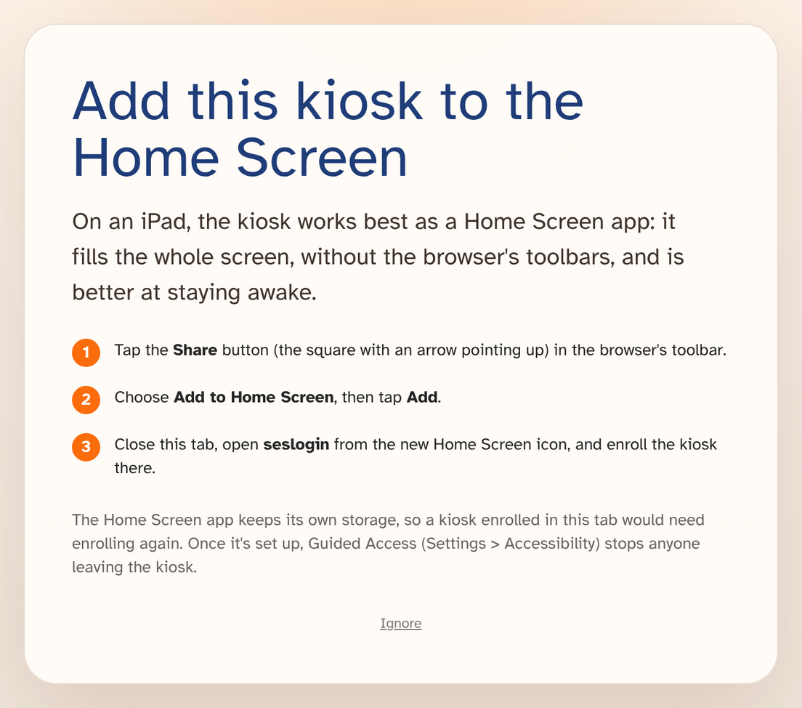
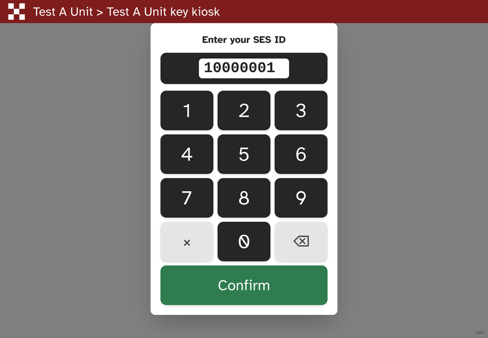

| A much better iPad kiosk, plus one check to make if your unit runs a kiosk on an iPad. | ||
|
||
A much better iPad kioskSES Activity kiosks now work significantly better on an iPad:
Home Screen setupOpen the kiosk page in Safari on an iPad and it now shows these instructions before you enroll. A Home Screen kiosk fills the screen and is better at staying awake. Because it keeps its own storage, apart from Safari, you only need to enroll it once.  What an iPad shows when the kiosk page is opened in Safari. Stays unlocked for longerThe kiosk now asks the iPad to keep its screen on, so it should dim and lock itself much less often between sign-ins, though it may still happen now and then. On a Home Screen kiosk this needs iPadOS 18.4 or later, so check Settings > General for updates, and keep the iPad plugged in. Made for the touchscreenOn an iPad, tapping the member ID field opens a large number pad, and the iPad's keyboard no longer covers half the screen.  The on-screen number pad on an iPad.
|
||
|
Questions, problems or feedback? Just reply to this email. Your reply opens a support ticket with the SES Activity team, so you can report an issue, tell us what you think of a change, or ask for help, and we'll get back to you. Thanks for everything you do for your unit. |
||
|
You're receiving this email because you are an administrator in SES Activity. Feature update emails are sent automatically to all SES Activity administrators. NSW SES Volunteers — SES Activity — seslogin.com |